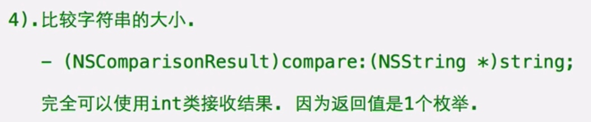

对象方法
- 调用：如果想要调用对象方法就必须先创建对象，通过对象名来调用
- 声明：使用‘-’号
类方法
- 调用：类方法的调用不依赖于对象，如果要调用类方法，不需要去创建对象，直接通过类名来调用。
- 声明：使用‘+’号
- 在类方法中不能直接访问属性
- 属性是在对象创建的时候，跟随着对象一起创建在对象之中
- 类第一次被访问的时候，会做类加载，是把类的带啊存储在代码段
- 节约空间，提高效率
- 如果方法不需要直接访问属性，也不需要直接调用其他的对象方法，则可以定义为类方法
类方法规范
- 如果写一个类，可以为这个类提供一个和类同名的类方法；
NSString最常用的类方法
instanceType 作为返回值 代表返回的是当前类的对象


NSString最常用的对象方法


